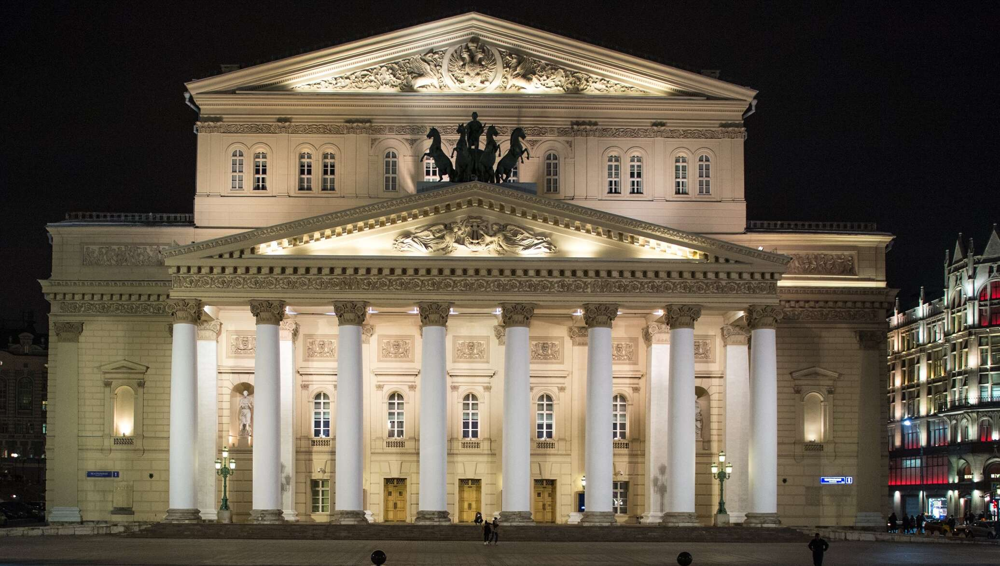
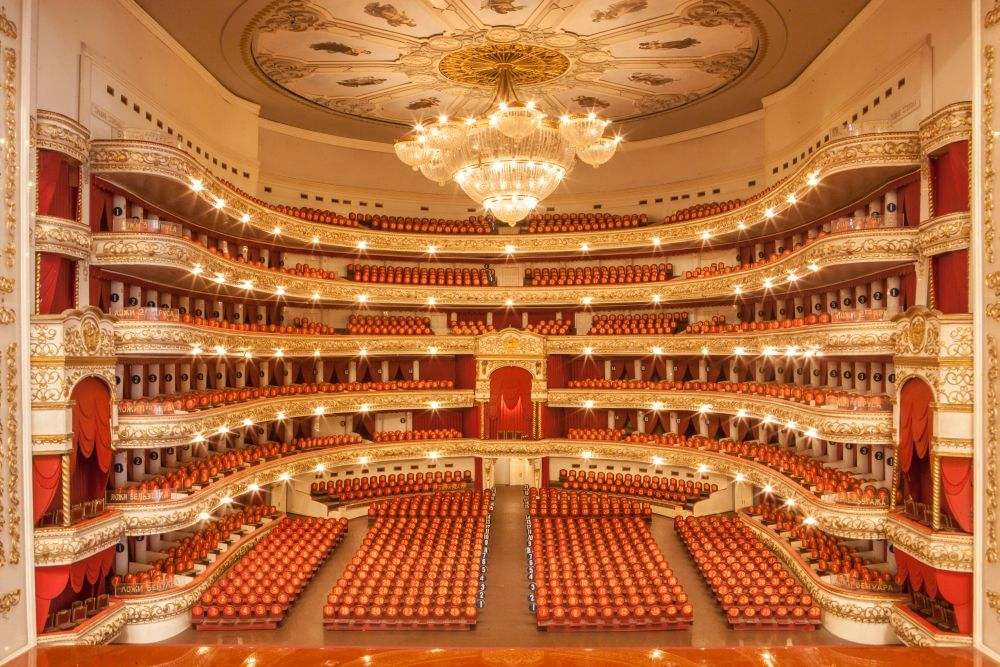

Большой театр: Встреча с искусством
Большой театр — это легендарный культурный центр Москвы, известный своими оперными и балетными постановками. Здание театра само по себе является архитектурным шедевром.
Я посетил балет "Лебединое озеро" и был поражён мастерством артистов и красотой интерьеров. Театр был основан в 1776 году, и с тех пор он стал символом русского искусства.
Посещение Большого театра — это не только культурный опыт, но и возможность прикоснуться к истории. Билеты лучше покупать заранее, так как они быстро раскупаются.
Совет: Возьмите экскурсию по театру, чтобы узнать больше об его истории и увидеть закулисную жизнь!